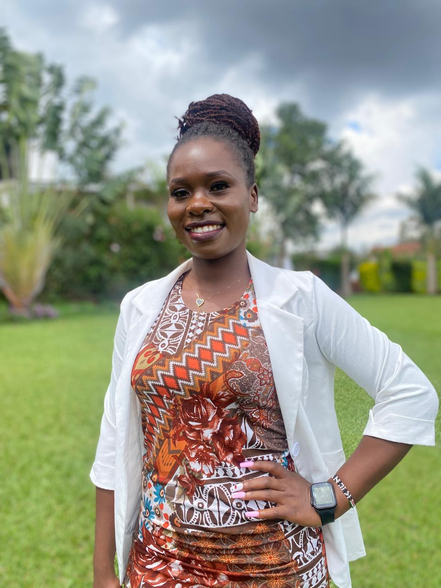

Mathematics
From basic arithmetic to advanced calculus, we make math simple and fun.
Bright Minds Tutors is dedicated to providing quality and personalized learning solutions. We focus on empowering students to reach their full potential through mentorship, skills development, and effective academic support.
We work with learners of all levels, helping them build confidence, develop problem-solving skills, and achieve their academic goals through innovative teaching strategies.
Our mission is to provide customized learning solutions that cater to each student's unique strengths and weaknesses.
Meet the people behind Bright Minds Tutors:
We are located in Nairobi, Kenya, with services available both in-person and online for learners across the country.
We use a combination of interactive lessons, practice, and feedback to enhance learning outcomes.
From basic arithmetic to advanced calculus, we make math simple and fun.
Explore physics, chemistry, and biology with hands-on learning methods.
Improve your grammar, vocabulary, and fluency in English and other languages.